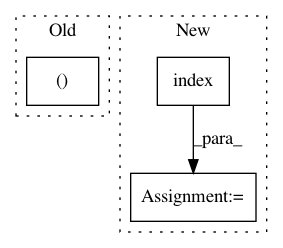

aa51e79cdbcbedbedeef68bcef646b2d43993753,src/sdk/pynni/nni/ppo_tuner/ppo_tuner.py,PPOTuner,_actions_to_config,#PPOTuner#Any#,492
Before Change
chosen_arch = copy.deepcopy(self.chosen_arch_template)
for cnt, act in enumerate(actions):
act_name = self.full_act_space[act]
(block_name, layer_name, key) = self.actions_to_config[cnt]
if key == "chosen_inputs":
if act_name == "None":
chosen_arch[block_name][layer_name][key] = []
After Change
idx = candidates.index(act_name)
chosen_arch[_key] = {"_value": [act_name], "_idx": [idx]}
elif _type == "layer_choice":
idx = self.search_space[_key]["_value"].index(act_name)
chosen_arch[_key] = {"_value": act_name, "_idx": idx}
else:
raise ValueError("unrecognized key: {0}".format(_type))
return chosen_arch
In pattern: SUPERPATTERN
Frequency: 3
Non-data size: 3
Instances
Project Name: microsoft/nni
Commit Name: aa51e79cdbcbedbedeef68bcef646b2d43993753
Time: 2019-11-25
Author: Quanlu.Zhang@microsoft.com
File Name: src/sdk/pynni/nni/ppo_tuner/ppo_tuner.py
Class Name: PPOTuner
Method Name: _actions_to_config
Project Name: dmlc/gluon-nlp
Commit Name: 090944e816fd3ff8e861fba4452851e0a901491d
Time: 2019-01-28
Author: linhaibin.eric@gmail.com
File Name: scripts/language_model/large_word_language_model.py
Class Name:
Method Name: train
Project Name: ClimbsRocks/auto_ml
Commit Name: 33851dea0f6c75ca1e685037393ea7160506b53a
Time: 2016-10-08
Author: climbsbytes@gmail.com
File Name: auto_ml/predictor.py
Class Name: Predictor
Method Name: _prepare_for_training